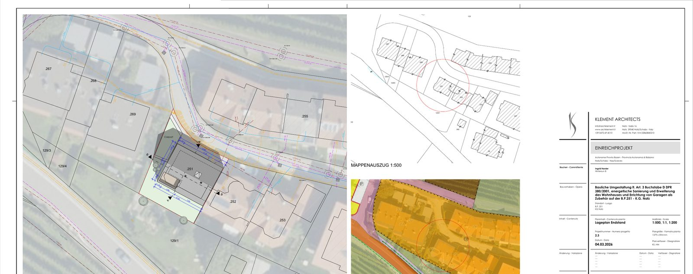
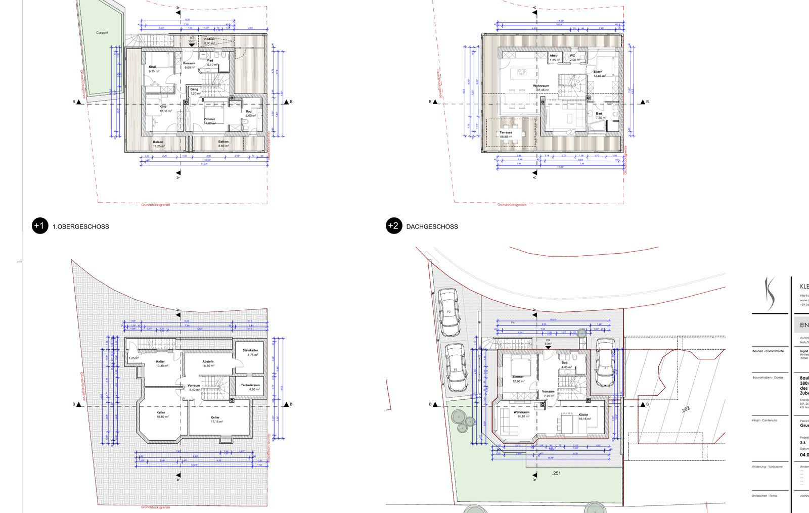
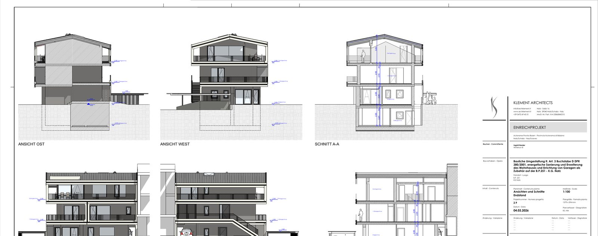
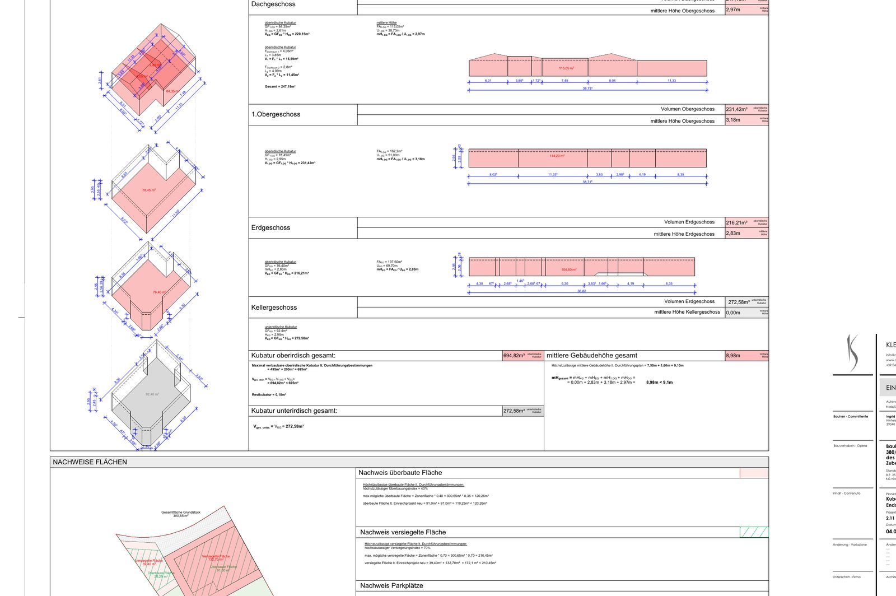
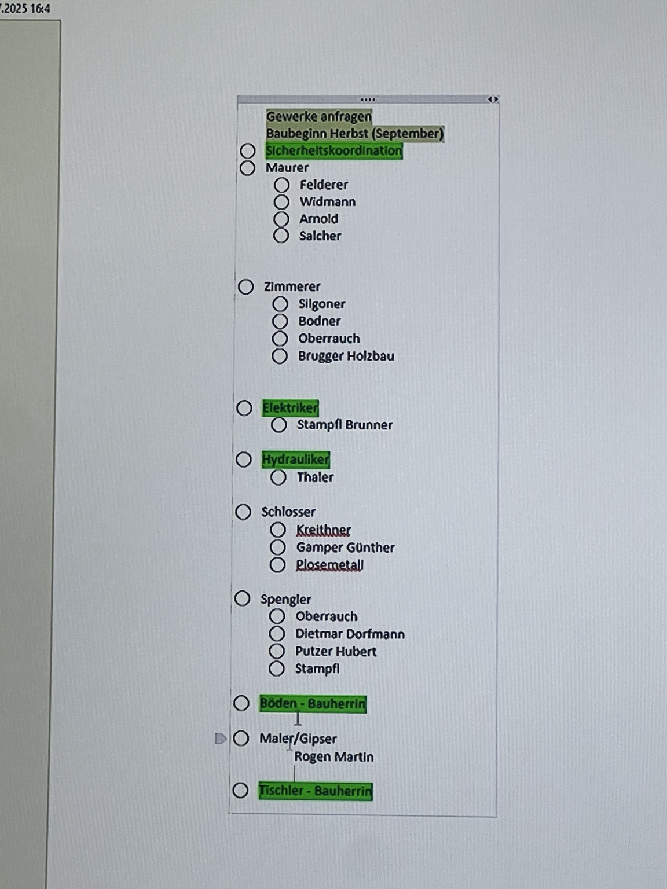
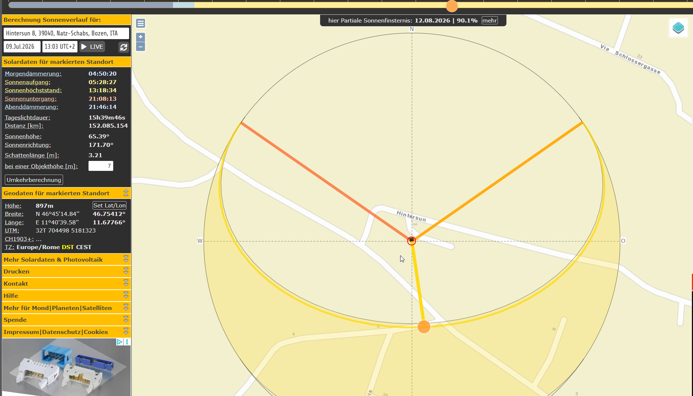

Aufgabenfortschritt
–
–
Kostenprognose
–
–
Finanzierungslücke
–
–
Strom-Autarkie
–
–
Projektampel
Nächste kritische Aufgaben
Prognose nach Budgetblock
Finanzierungsbausteine
Wohnungen & Tausendstel
Planbilder




Bilder sind Ausschnitte aus den Planunterlagen. Original-PDFs im Dokumentenregister/Drive.
Budgetblöcke (gestuft)
Angebote
Angebotsvergleich
Kostenpositionen
Kostenschätzungen (versioniert)
Finanzierung
Bankangebote
Förderungen
Zahlungen
Zieltermine
Gantt-Zeitstrahl
Aufgabenliste
Gewerke-Status
Firmenliste
Originalnotiz Ausschreibungen

Monatsbilanz PV vs. Last
Monatsautarkie
Energiebilanz
Batterie-Sättigung
Energieparameter (editierbar)
Standort/Sonne
